Day 1
The hardware of Music From Outer Space's Weird Sound Generator (henceforth, WSG) is pretty sweet. I like synths and am interested in building some going forward. This project is less than $100 all told. Having finished Make: Electronics and getting my feet a little wet with electronics projects, it seems like a pretty solid second project.
Offered upon the website are several options, from a PCB all the way up to a very expensive fully assembled WSG, and everything between. Most buy the component kit and faceplate as faceplates are a pain. I just bought the PCB and picked up all the fiddly bits from Jameco and from my huge supply of Chinese resistors and capacitors. I haven't solved the faceplate problem yet, but I have some building to do first.
This is not really day 1, as I've spent a few days going over the schematic and reading the theory of operation on the website. For the most part, this is accessible as synthesizers get, and it's really easy to understand the nuts and bolts of this. I'll briefly go over them in another post.
As I said, the hardware is sweet. I definitely underestimated how nice the PCB would be. It's very neat looking and all the solder holes look like they're little shiny metal tubes. It is truly a thing of beauty to a guy who is coming from cheaper kits.
Apologies for the terrible photography.
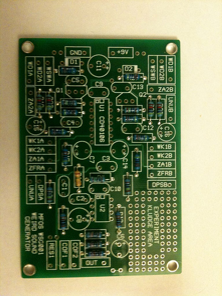
So at this point I had gotten all the resistors in. That one brown resistor is a 750K nightmare. It wasn't in either of the assortments I had, so I had to special order 50 of them from Thailand. For $1. Shipped. I'm not sure how that works out economically, but I'm alright with it.
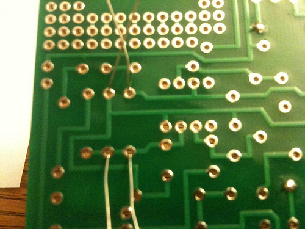
This is how I roll on soldering, and a view of the backside of the board. You'll note that I use a cheap set of helping hands I got from Ace for $5 instead of a fancy Panavise, Jr.
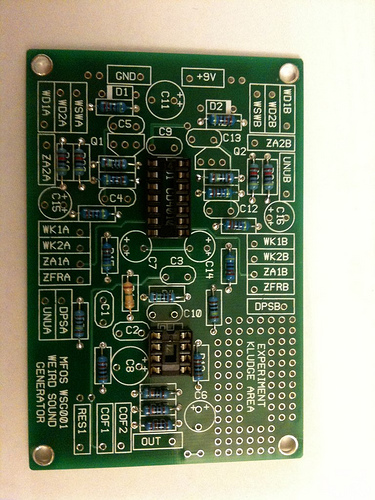
Even with very inexpensive chips, it's better to solder a socket to the board. It is excruciating to unsolder a 14-pin chip.
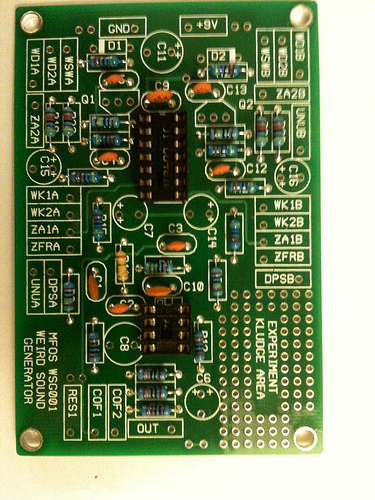
I've installed the ceramic capacitors here.
Day 2
Got the opportunity to solder in the electrolytics and the semiconductors (D1 and D2, Q1 and Q2). The board is complete.
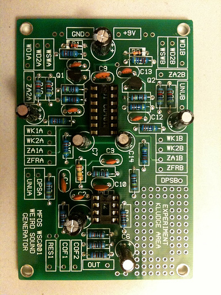
Day 3
With the board basically stuffed, I had to build a faceplate. MFOS sells them for $32 which is way more than I wanted to spend. Plus I can always use an excuse to flex my DIY skills.
I purchased a 6"x18" piece of steel from Lowe's for about $5. They had aluminum in the same size, but it was twice as much and almost certainly not worth it.
First, I had to cut it in half. I have a metal-cutting blade on my circular saw, but that ended badly. Ultimately, I clamped it down and cut it with a hacksaw, then filed the rough edge down. I ended up about 1/16" shorter than my intended 9", but it's good enough.
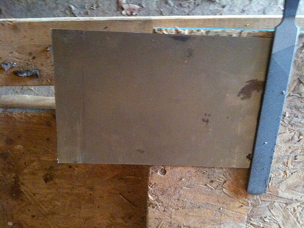
Fiddling with the knobs and switches to get my layout sheet right in Photoshop.
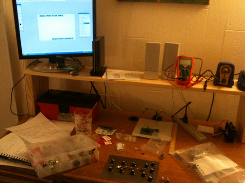
The sheet was printed and stuck to the aluminum. Instead of using proper tools, I marked the holes with a concrete screw and a hammer, then drilled them out into a scrap board.
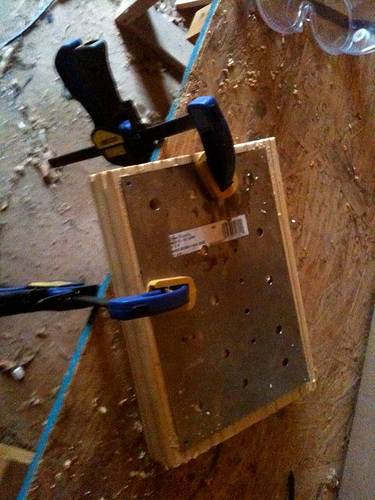
After filing off the burrs, all the pots and switches fit marvelously.
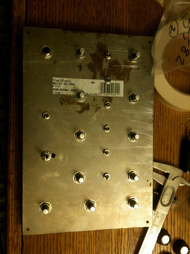
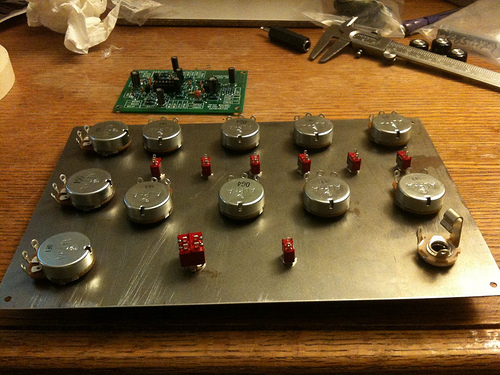
Day 4
I wired the faceplate up. It was one of the more trying parts of this build so far.
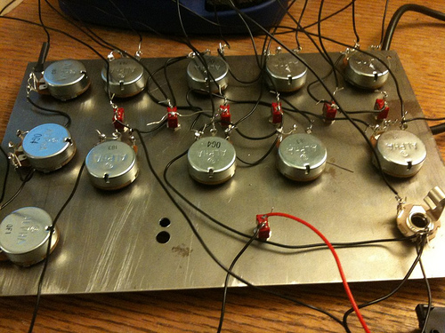
At this point, all the faceplate wiring is complete. That wasn't so bad, right?
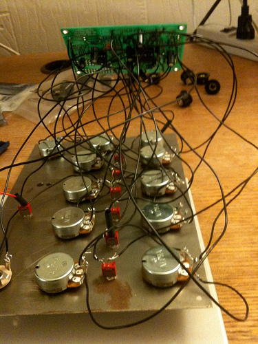
The beast, realized.
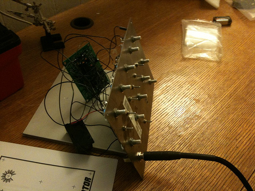
This is the part where I expected dismal failure. In my experience, electronics projects usually involve 3 or 4 hours of me looking for my stupid mistake.
Cory's Weird Sound Generator by chamblin
Success!
Unfortunately, in my excitement I forgot to put the fancy cover (that I haven't made yet) on the panel. So I have to disassemble the panel, stick the panel cover on, and then hope the pots and switches go back without too much work. Note to future self: FINISH THE PANEL BEFORE PUTTING STUFF IN IT.
Day 5
I finished up the design for the faceplate cover. My wife has access to a laminator at work, so I'm counting on her to cut out and laminate the piece monday.
My process was basically starting with the mechanical layout in Photoshop and cutting up Ray Wilson's faceplate for most of the pieces and moving them into place. It was time consuming but not overly difficult.
At first, I was just planning on using a sheet of construction paper, but I found this textured yellow cardstock among my wife's scrapbooking supplies and figured it was easier to ask for forgiveness than permission. I was correct.
This is the result.
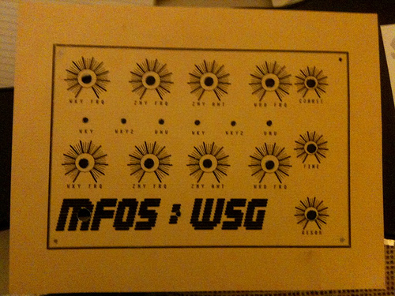
I also started cutting out the case pieces. I am not a very good woodworker, and am apparently even worse at basic math. My fudge factor was insufficient on the sides and somehow I ended up with an extra 7/8" on the bottom and top. I don't have any pictures of this, so let your imagination fill in the details:
Mark, clamp, cut, cut, cut, curse, give up on project, mark, clamp, cut, measure, throw away piece, mark, cut. And so on. And now it's too dark to fix in my currently unpowered shed, so I'll have to work it out in the morning.
Day 6
I woke up this morning with a lot of project momentum. Though I couldn't cut the pieces last night, I marked them (about 3 times before I got it right) so I could go right to cutting this morning. I zipped through them pretty quickly. The dowel was particularly annoying because I thought I had a 4" board and I'm giving 1/2" clearance on each side. So I cut them all to 3". Then when I went to check my work (of course, after I had already hand-sawn all 4 pieces), it didn't work out because I had a 3" board. D'oh. Another inch.
Anyway, after a bunch of cutting and sanding, I finally had my pieces.
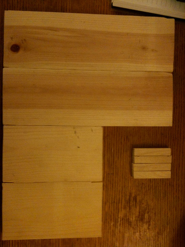
After some pilot holes and another trip to the hardware store to get the correct screws:
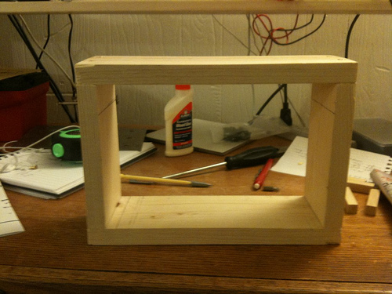
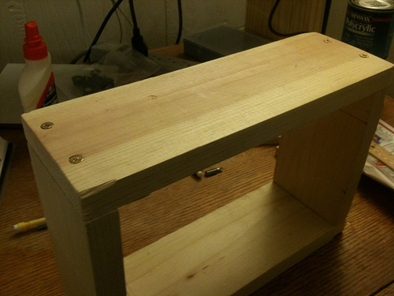
Of course, there was a knot right on one of my screw holes. and my pilot hole wasn't big enough, apparently. Because I broke a screw trying to drive it. So now I have half a screw stuck in this thing. Structurally, it's not the biggest deal in the world because the posts and faceplate should hold it together. So ultimately, I'm probably just cutting off the screwhead and super gluing it over the hole. That side became the "bottom".
Moment of truth:
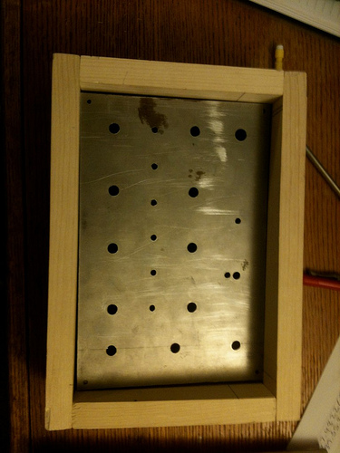
It fits!
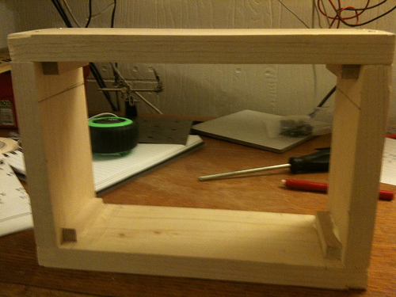
Posts are glued in.
I've stained half of it so far, it's drying now.
Day 7
Immense storming today so I was unable to get to the shed to give the case a coat of Polycrylic. Regardless, I was able to wrap up the staining late last night with flashlights and it looks pretty decent this morning.
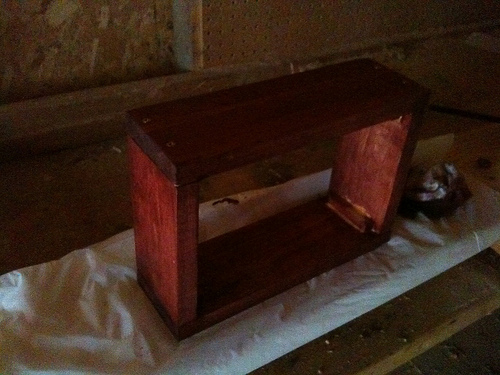
The wife did a great job getting the faceplate cover laminated and perfectly cut edges. I used 3M Super 77 spray adhesive to attach the cover to the plate. I hastily shoved the pots through and screwed them on. The glue wasn't totally dry (or remotely dry), but it seems like it's not going to be a disaster.
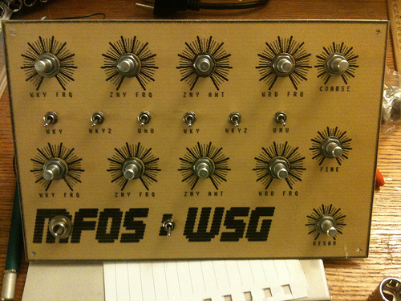
Pots are now installed.
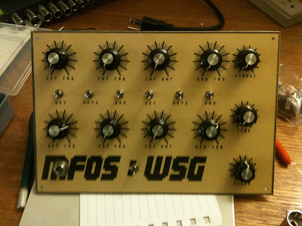
Reassembling the pots and switches onto the faceplate was not nearly as big of a deal as I thought it would be. The nest of wires kept everything in approximately the correct place. The only hiccup was an easily noticed wire that had broken off, which I repaired before hooking it back up. It still works!
I am in the home stretch on this. Hopefully, I will have an opportunity to apply the finish tomorrow and find some way to mount the board neatly inside the case. If I can find a PCI slot cover, that may do exactly the trick.
Also, I have yet to find a back for this thing. A piece of pegboard or other paneling would be great, but I don't have any scrap that I'm aware of and I refuse to buy a 4'x6' sheet to use less than a square foot of the material.
Day 8
Got this wrapped up (for now) today.
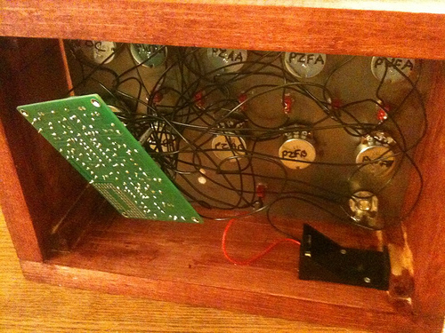
Battery holder secured here. This guy was a lucky find in my parts box. I had one of those regular clippy ones without the base for this and after I'd secured it to the panel I found this one.
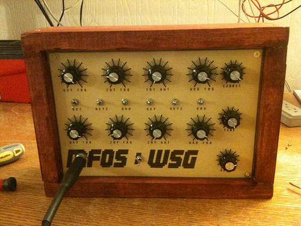
Front panel screwed in and secured.
The prologue is that I still haven't found a back I like. The board is just kind of hanging out inside the case, which i think is OK for a long time. There are a lot of wires and it's very sturdy. In fact, getting it to move may be the hardest part of installing the back. I'm sure I'll come across some scrap paneling at some point and get the back of my dreams.
I highly recommend this project for ease of assembly and awesomeness of sound.
Day 9
After wrestling with it for a bit, I finally got a back on this thing, courtesy of my friend Jeremy who donated a piece of an old hollow door.
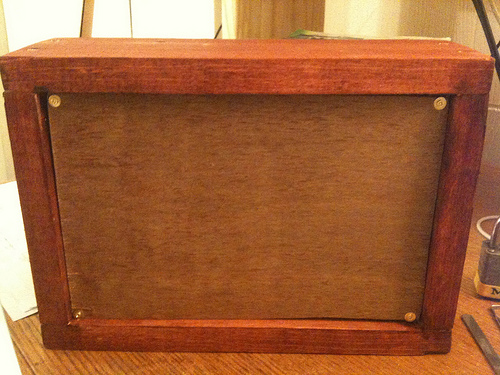
This completes the Weird Sound Generator.
For now.